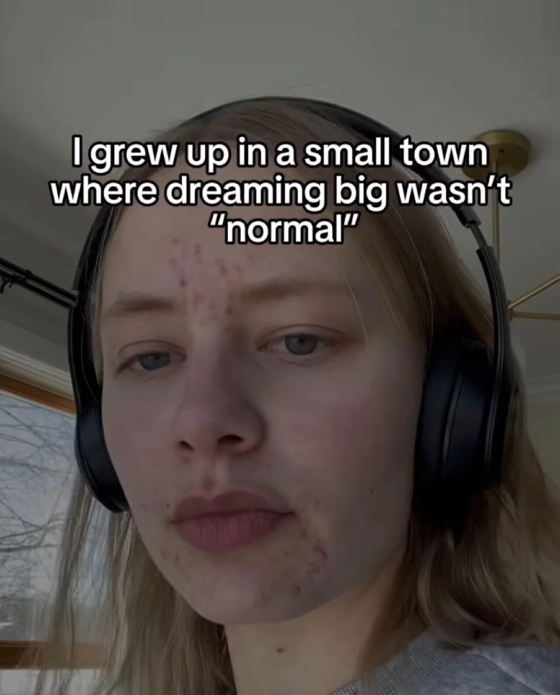
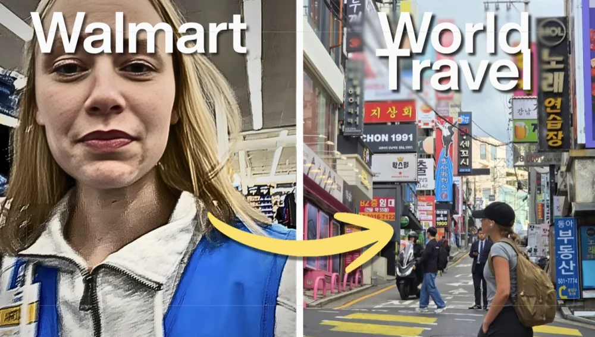
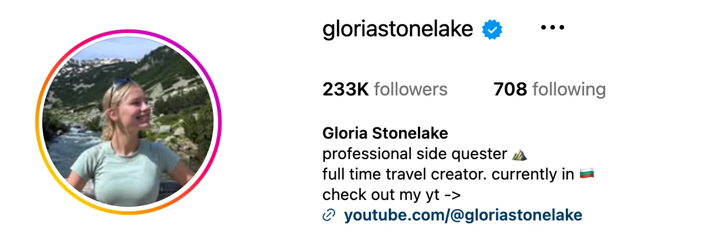
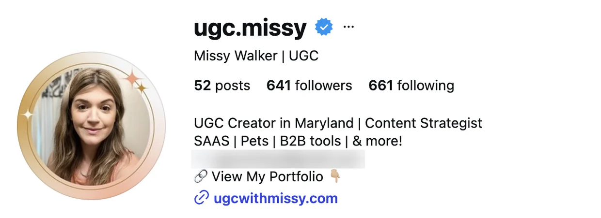
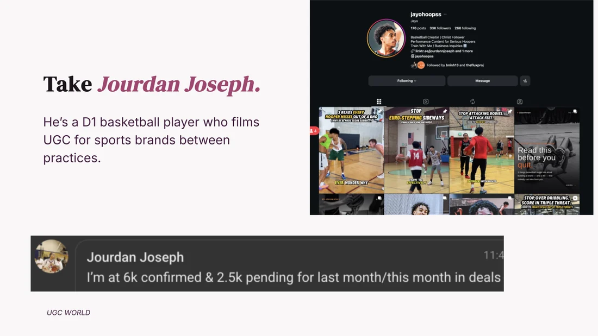
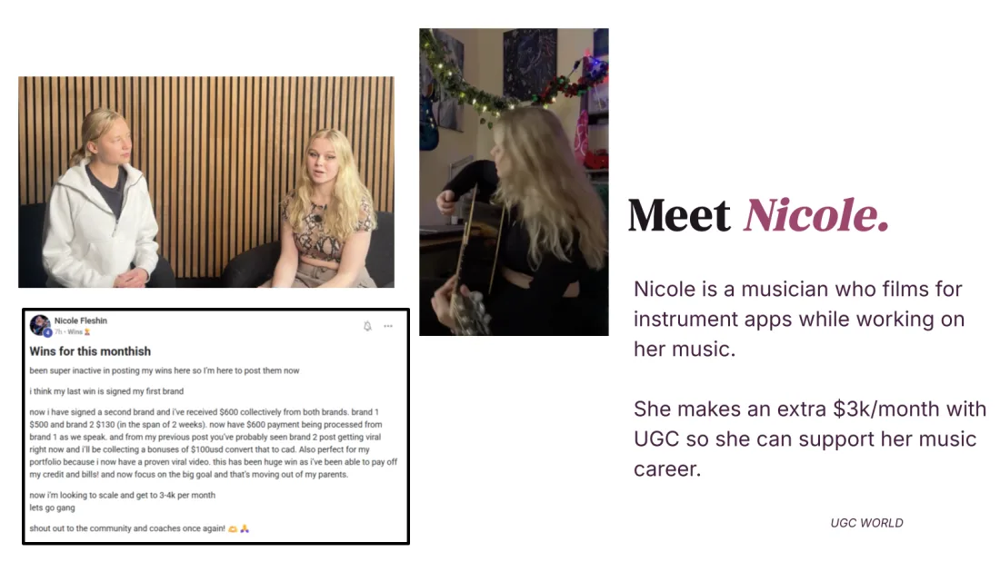
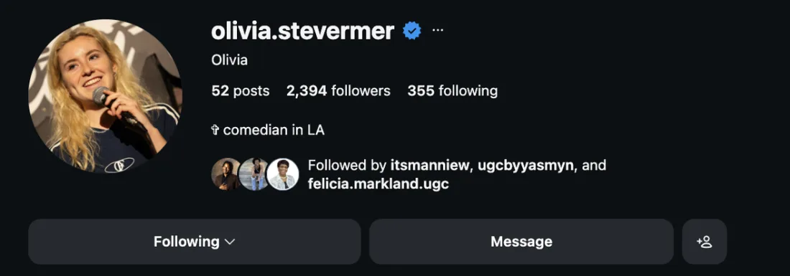
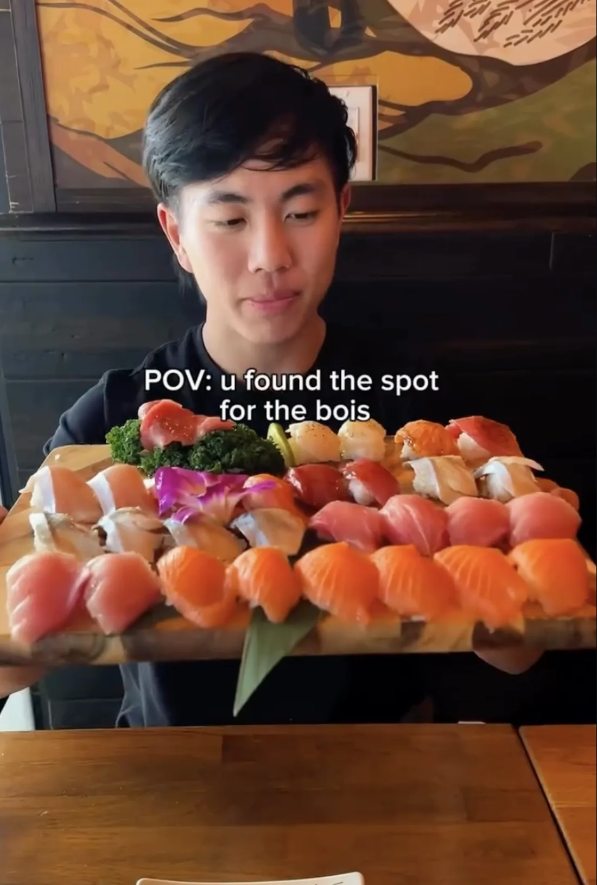
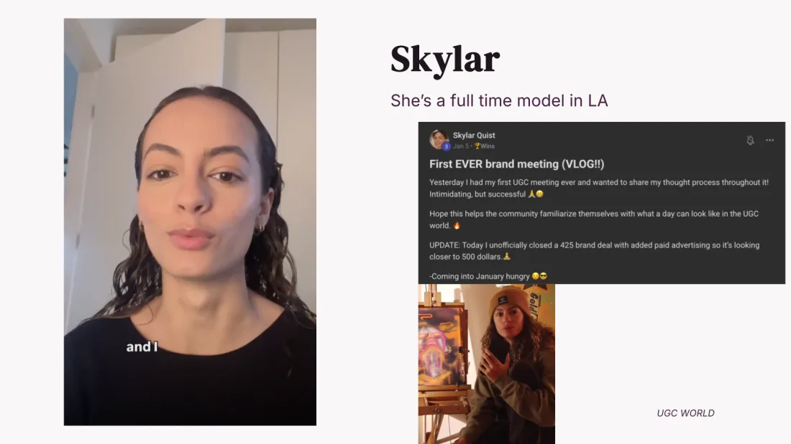

How a brand decides you're worth paying, before you have a single client
The exact steps I would take if I were starting from complete zero again, before you ever sit down for the live workshop
WELCOMEEEE to VIP! I'm soooo happy that you took that first step and invested in yourself, seriously.
Really quickly, before we get into anything, if you're watching this right now, then it should mean two things are already done on your end.
The first is that you replied YES to the text one of our coaches sent you, and the second is that you filled out the questions on the last page, which is the exact information my team is using to start building your portfolio right now.
✓
Replied YES to the text from your coach
One word. That is the whole thing, and it is what opens your file on our side.
✓
Filled out the portfolio questions on the last page
About five minutes. This is the exact thing my team is using to build your portfolio right now.
So, if you've still got either of those two things left to do, pause this video really quickly and knock them out first. It genuinely takes about five minutes, and it's the only thing we need from you to deliver your portfolio before the workshop.
Now, if you've already completed those two steps, here's what we're going to cover right now.
What I want to do with the time you're giving me here is take basically the last four years of my life as a content creator, everything I got wrong at the start and everything I've since watched work across more than a thousand other creators, and condense all of it into one crash course that you get before you ever sit down for the live workshop.
These are the exact steps I would take if I were starting from complete zero again:
Without a portfolio
Without an audience
Without any experience creating content for brands
Every time a question pops into your head while you're watching this, write it down instead of pushing it away, and bring the list to the live workshop.
Really quick backstory about me
I'm from a small town in Minnesota.
I worked at Walmart, served tables, and probably worked three to five different jobs from the time I was 15. I was always hustling, and eventually, I just got burned out.
I felt suffocated doing what I was doing, and I knew there had to be something more than just working a normal 9-to-5 forever.

Small town Minnesota. Walmart, waiting tables, three to five jobs since I was 15.
I started getting curious about making money online, and I kept seeing girls my age with literally a few hundred followers who had "UGC creator" in their bios everywhere.
It wasn't influencing. They didn't have huge audiences. They were just creating content for brands and getting paid for it.
Then I met a local business owner who gave me a shot and let me do a paid trial for his brand.
One brand deal led to the next.
And pretty soon, that turned into multiple huge brand partnerships, which allowed me to turn this into a real multiple-six-figure business while traveling the world, which was literally my dream.

Four years later. Same skill, different country.
I didn't start with followers or some crazy network.
I started with my dusty iPhone, with the back camera literally broken, and a burning desire to learn the industry and get better.
And that's important because it leads directly into what UGC actually is.
What UGC actually is
If I had to explain UGC in one sentence:
Brands need a huge volume of short-form content for their advertising. They need it constantly because creative burns out fast, and they need it to feel like it came from a real person rather than a commercial. That's why they hire everyday people to create it instead of relying only on traditional studios.
What Google returns when you ask why brands hire everyday people instead of influencers.
What brands actually value now
Now, the part that's genuinely changed, and this is the part I want you to sit with for a second, is what brands actually value.
Back in 2020, so much of the game was about audience size. Brands were paying heavily for follower count and reach, and if you didn't have the numbers, you often weren't even part of the conversation.
Today, the advantage has shifted much more toward skill and the amount of trust a skilled creator can build with the customer.
And trust me when I say this because I'm sort of living proof of it.
I'm still making somewhere between $10,000 and $20,000 a month right now from brands like Canva and School of Hard Knocks.
And yes, I have around 200,000 followers now, but not one of those brands has ever cared about that number.
The proof is that I have never once posted a single piece of that work to my own following.
Zero.

The following I have now.

And Missy, one of our creators, at 641 followers. She makes $12k/m from one brand partnership.
What they're paying me for is the content.
The skill.
And the trust that the content is able to build with their customers.
So, what we're going to go through together in this video are those exact fundamentals on the content creation side and then the portfolio side, meaning how to put together something that shows a brand, almost immediately:
Who you are
Where you fit
What you can create
Why they should hire you
The fundamentals of great content
Before we get into your portfolio, I want to give you a few simple principles you can use to study and create better content.
You do not need expensive equipment, a huge following, or professional filming experience.
You need to understand the customer and create something that captures attention, feels relatable, and builds trust.
When studying or creating content, look for these five things:
1
Hook
What happens in the first few seconds that makes someone stop scrolling?
2
Problem
What specific problem, desire, or relatable situation is being introduced?
3
Product
How is the product naturally brought into the story?
4
Proof
What makes the viewer believe the product actually works?
5
Call to action
What does the creator want the viewer to do next?
That's the basic flow: Hook, then Problem, then Product, then Proof, then Call to action.
As you watch great creators, don't copy exactly what they say. Study why the content works, and then apply those principles using your own personality.
Creator portfolio introduction
Having a good portfolio is like 80% of securing paid brand deals.
In the workshop, I'll show you that this is a SUPER abundant industry where brands have insane demand, and there simply isn't enough of a supply of "good creators" right now.
As long as you understand the fundamentals of creating good content and know how to present yourself using a powerful portfolio, that's 90% of the battle when it comes to landing brand deals.
Your portfolio gives brands a reason to take you seriously. It shows them:
Who you are
What you can create
Why you could be a good fit for their customers
And as your portfolio becomes stronger, you may naturally begin attracting brands that want to work with you.
What is a portfolio?
A portfolio is basically like a résumé for brands.
It's a place to introduce yourself, store your best content, and show brands what you can create.
If you don't have any content yet, don't worry. You can begin with sample videos using products you already own.
Your portfolio answers two questions:
Who are you?
Why should brands hire you?
Simply put, that's it.
Let's review some great portfolio examples
Here are the portfolios I want you to go through.
Swipe across, or use the arrows. Every one of these opens the real live site.
These portfolios are the result of months, and for some creators, even years, of work.
You are not expected to have everything they have right now.
Your first goal is simply to create a clean, professional foundation that gives a brand enough confidence to start a conversation with you.
The main sections of a portfolio
You'll notice that there are a few key sections:
Introduction
Who you are
The type of creator you are
The types of brands or content you're interested in
Content
Examples of videos you've created
Sample videos if you haven't worked with brands yet
Different styles of content that show your range
Proof
Testimonials from brands, if you have any
Results or feedback from past work
If you don't have proof yet, don't worry, focus on strong sample content
Call to action
Invite brands to email you
Ask them to contact you about a project
Make the next step clear and easy
How to study great content
We're going to cover:
How to create your first sample videos
Which brands and products to create content for
How to study other successful creators
Look at our agency portfolio of top-performing UGC creators. This is the type of work we show to brands.

Jourdan is a D1 basketball player who films for sports brands between practices.

Nicole is a musician who films for instrument apps while working on her music.

Olivia quit a six figure sales job in LA to go full time as a comedian. UGC funds the dream.

Brian is a huge foodie. Now he gets more free food, and gets paid for it.

Skylar is a full time model in LA, filming for the brands she already wears.
Five of our creators. The thing they had before UGC is the thing that got them hired.
Don't overwhelm yourself. Just study the basics.
Ask yourself:
Would I actually buy after watching this content?
Does the creator feel natural and relatable?
What made me continue watching after the first three seconds?
How does the creator tell the story?
How is the product introduced?
What makes the content feel believable?
What makes the content effective?
These are the questions you should be thinking about.
The goal is not to copy another creator word for word.
The goal is to understand what makes great content work so you can eventually create it in your own style.
What happens next?
So far, we've covered two things:
The fundamental content principles that help attract high-paying dream brand deals.
The fundamentals of a portfolio that can help you land your first paid brand deal as quickly as possible.
Meanwhile, my team is building your portfolio as we speak.
It can take up to 24 hours, depending on the time of day and when your answers were submitted.
When it's ready, we'll text you the link to your first draft.
Also, by the way, the coaches building your portfolio right now are the same coaches who speak with major companies every day and help creators secure brand opportunities.
They know:
What works
What doesn't work
The small details that can make you stand out as a creator
Your portfolio should arrive as a polished first draft, but of course, there may be certain revisions you'd like to suggest, or maybe it will already feel 100% perfect.
It really just depends on your personal preferences.
Our coaches will happily help you make those revisions if needed.
Come prepared for the live workshop
Please come to the workshop with your portfolio open because we're going to cover:
Exactly how I pitch my portfolio to brands and the best places to find them
How I negotiate brands from single-video deals into yearly brand partnerships
How I turned Cloud 9 from a $600-per-month deal into a $24,000-per-year partnership during my first year working with them
The specific content proposals I use to retain long-term clients
How you can scale this from a side hustle into a real, consistent income
Remember, everything in this video is yours for life, so you can save it and come back to it.
The content, the portfolio, and the entire setup here are the foundations.
Me and all of my top creators, the ones making $10,000 to $20,000 per month, still come back and use the same principles you learned today to revise our portfolios, improve our content strategies, and continue getting better.
It's like playing a sport.
Once you have the basic foundations, they never leave you. They stay with you for the rest of your career.
So bring your portfolio, bring your notes, and bring the questions you wrote down while you were watching this to the live workshop.